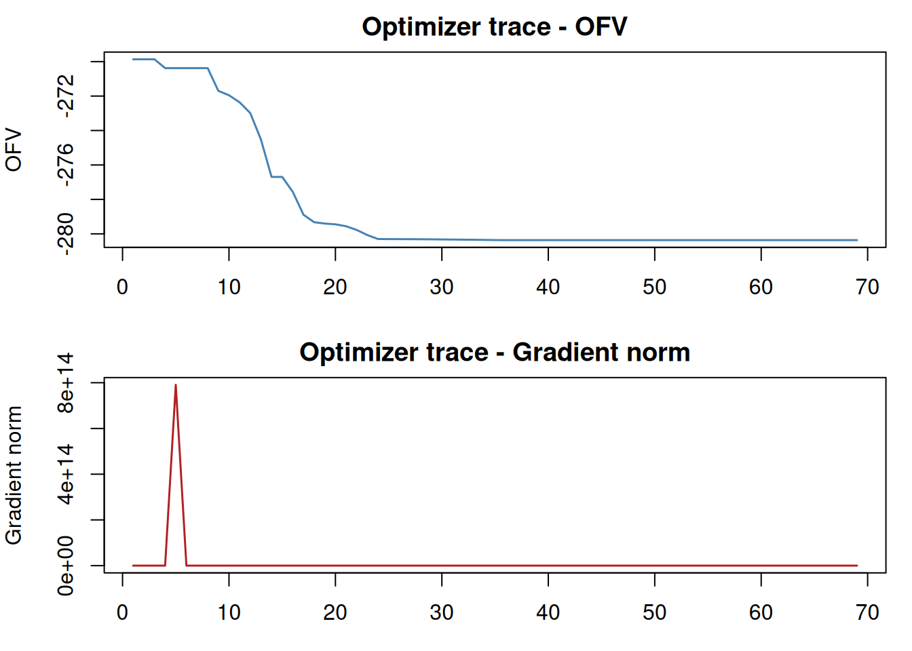

library(ferx)
ex <- ferx_example("warfarin")5 Fitting
5.1 Overview
ferx_fit() is the central function. It compiles the model, runs the optimiser, and returns a ferx_fit object with estimates, standard errors, and individual diagnostics.
5.2 Estimation methods
Pass method to choose the algorithm:
| Method | Description | Typical use |
|---|---|---|
"foce" |
First-Order Conditional Estimation | Default, fast, well-tested |
"focei" |
FOCE with interaction | When residual error depends on ETAs |
"saem" |
Stochastic Approximation EM | Models with many ETAs or strong nonlinearity |
"gn" |
Gauss-Newton / BHHH | Quick exploration; no covariance |
"gn_hybrid" |
Gauss-Newton then FOCEI polish | Fast warm start, rigorous finish |
fit_foce <- ferx_fit(ex$model, ex$data, method = "foce")Mu-referencing detected for: ETA_CL, ETA_KA, ETA_Vfit_focei <- ferx_fit(ex$model, ex$data, method = "focei")Warning: Model file [fit_options] sets `method = foce` but ferx_fit() argument
overrides it with `focei`. The call-time value will be used.Mu-referencing detected for: ETA_CL, ETA_KA, ETA_V5.2.1 Method chains
Pass a character vector to run methods in sequence. Each stage is seeded with the previous stage’s converged parameters. Only the final stage produces the reported covariance and diagnostics.
fit_chain <- ferx_fit(ex$model, ex$data, method = c("saem", "focei"))Warning: Model file [fit_options] sets `method = foce` but ferx_fit() argument
overrides it with `saem, focei`. The call-time value will be used.Mu-referencing detected for: ETA_CL, ETA_KA, ETA_Vsummary(fit_chain)--------------------------------------------------
ferx NLME Fit Summary
--------------------------------------------------
Model: warfarin
Dataset: warfarin
Converged: YES
Method: SAEM -> FOCEI
Gradient: auto (requested) -> fd (used)
ferx v0.1.0
Settings (model file / call-time override):
method foce [model only]
maxiter 300 [model only]
covariance true [model only]
Structure: 1-cpt oral (TVCL, TVV, TVKA) | IIV: ETA_CL, ETA_V, ETA_KA | IOV: none | Residual: proportional
OFV: -286.0163 AIC: -272.0163 BIC: -253.1129
Subjects: 10 Obs: 110 Params: 7 Iter: 654
Shrinkage: ETA1=-5.4% ETA2=-5.2% ETA3=-5.3%
EPS shrinkage: 14.3%
Covariance: FAILED | Wall time: 0.9s
Warnings:
* [FOCEI] Covariance step failed
* mu-ref: ETA_CL, ETA_KA, ETA_V
* 84 EBE fallback(s)
--------------------------------------------------The chain summary shows the full sequence:
Method chain: saem → focei5.2.2 FOCE vs FOCEI
Both methods integrate over the ETA distribution using a second-order Laplace approximation. The difference is in how the residual error is treated:
- FOCE: the residual function is linearised around ETA = 0 (no interaction between ETA and the error model)
- FOCEI: the residual function is linearised around the individual EBE — captures the interaction when
ipredappears inside the error model
For proportional error on concentration data, FOCEI is typically more accurate. The performance difference is small; use FOCEI by default.
5.3 The covariance step
covariance = TRUE triggers the Hessian-based covariance matrix after convergence. This provides standard errors, 95% confidence intervals, and the condition number.
fit <- ferx_fit(ex$model, ex$data, method = "focei", covariance = TRUE,
optimizer_trace = TRUE)Warning: Model file [fit_options] sets `method = foce` but ferx_fit() argument
overrides it with `focei`. The call-time value will be used.Mu-referencing detected for: ETA_CL, ETA_KA, ETA_VIf the covariance matrix is non-positive-definite, ferx reports:
! Covariance step: Hessian is not positive definite.
Eigenvalues: [8.4, 2.1, 0.3, -0.01]
SE estimates not available.A near-zero or negative eigenvalue usually indicates an over-parameterised model or a boundary estimate.
5.4 Parallelism
The per-subject inner loops (EBE search, SAEM subjects) run in parallel on threads workers:
fit <- ferx_fit(ex$model, ex$data, threads = parallel::detectCores(logical = FALSE))Passing NULL (the default) uses one worker per logical CPU. On HPC shared nodes, cap the thread count to avoid contention:
fit <- ferx_fit(ex$model, ex$data, threads = 4L)5.5 Reading the output
summary(fit)--------------------------------------------------
ferx NLME Fit Summary
--------------------------------------------------
Model: warfarin
Dataset: warfarin
Converged: YES
Method: FOCEI
Gradient: auto (requested) -> fd (used)
ferx v0.1.0
Settings (model file / call-time override):
method foce [model only]
maxiter 300 [model only]
covariance true [model only]
optimizer_trace TRUE
Structure: 1-cpt oral (TVCL, TVV, TVKA) | IIV: ETA_CL, ETA_V, ETA_KA | IOV: none | Residual: proportional
OFV: -286.0163 AIC: -272.0163 BIC: -253.1129
Subjects: 10 Obs: 110 Params: 7 Iter: 211
Shrinkage: ETA1=-5.4% ETA2=-5.2% ETA3=-5.4%
EPS shrinkage: 14.3%
Covariance: FAILED | Wall time: 0.2s
Warnings:
* Covariance step failed
* mu-ref: ETA_CL, ETA_KA, ETA_V
* 9 EBE fallback(s)
--------------------------------------------------Key fields in the printed summary:
| Field | Meaning |
|---|---|
| THETA estimate | Point estimate at convergence |
| SE | Standard error from the covariance step |
| CV% | Coefficient of variation = SE / estimate × 100 |
| 95% CI | Estimate ± 1.96 SE |
| OMEGA | Between-subject variance (diagonal elements) |
| CV~ | Approximate BSV in % = √ω × 100 |
| OFV | Objective function value (−2 log-likelihood) |
| AIC | OFV + 2 × npar |
| BIC | OFV + ln(nobs) × npar |
5.5.1 Accessing individual fields
fit$theta # named numeric vector of theta estimates TVCL TVV TVKA
0.1326956 7.7377066 0.8107950 fit$omega # omega matrix [,1] [,2] [,3]
[1,] 0.02858883 0.000000000 0.0000000
[2,] 0.00000000 0.009592089 0.0000000
[3,] 0.00000000 0.000000000 0.3358648fit$sigma # sigma vector[1] 0.01056565fit$se_theta # SEs for thetaNULLfit$ofv # scalar OFV[1] -286.0163fit$aic[1] -272.0163fit$bic[1] -253.1129fit$sdtab # individual-level diagnostics (ID, TIME, DV, PRED, IPRED, CWRES, ...) ID TIME DV PRED IPRED CWRES IWRES EBE_OFV
1 1 0.5 5.3653 4.287673 5.3519698 0.479424071 0.235737106 -25.92553
2 1 1.0 8.2578 7.109707 8.2836042 0.395171101 -0.294832650 -25.92553
3 1 2.0 10.7063 10.149118 10.7084469 0.149072191 -0.018975700 -25.92553
4 1 4.0 11.4142 11.812227 11.3830798 -0.508855481 0.258753832 -25.92553
5 1 8.0 10.9232 11.490256 10.7575639 -0.563256870 1.457286640 -25.92553
6 1 12.0 9.9442 10.746489 10.0691082 -0.878550440 -1.174096510 -25.92553
7 1 24.0 8.0634 8.748319 8.2546703 -0.893619053 -2.193065811 -25.92553
8 1 48.0 5.6575 5.796651 5.5477435 -0.172781111 1.872483454 -25.92553
9 1 72.0 3.7373 3.840870 3.7284902 -0.133242166 0.223632911 -25.92553
10 1 96.0 2.5019 2.544967 2.5058187 -0.061194495 -0.148012281 -25.92553
11 1 120.0 1.6785 1.686299 1.6840938 -0.012940513 -0.314374799 -25.92553
12 2 0.5 3.2230 4.287673 3.2274787 -0.577612609 -0.131338555 -33.50211
13 2 1.0 5.6205 7.109707 5.6654679 -0.571184583 -0.751225622 -33.50211
14 2 2.0 8.9389 10.149118 8.8735258 -0.473878552 0.697291354 -33.50211
15 2 4.0 11.6945 11.812227 11.5828239 -0.233240613 0.912535497 -33.50211
16 2 8.0 12.1458 11.490256 12.1056551 0.485035921 0.313867042 -33.50211
17 2 12.0 11.4394 10.746489 11.3955603 0.712698403 0.364112520 -33.50211
18 2 24.0 8.9787 8.748319 9.1333629 0.305964115 -1.602725810 -33.50211
19 2 48.0 5.8306 5.796651 5.8437430 0.046049016 -0.212867132 -33.50211
20 2 72.0 3.7432 3.840870 3.7389511 -0.117379189 0.107555958 -33.50211
21 2 96.0 2.4121 2.544967 2.3922604 -0.181556079 0.784925480 -33.50211
22 2 120.0 1.5248 1.686299 1.5306191 -0.266643689 -0.359824434 -33.50211
23 3 0.5 4.3905 4.287673 4.4260527 0.046331454 -0.760255784 -31.71785
24 3 1.0 7.1595 7.109707 7.1526851 0.008963699 0.090176061 -31.71785
25 3 2.0 9.9835 10.149118 9.8261003 -0.098316737 1.516095616 -31.71785
26 3 4.0 11.0602 11.812227 11.0162364 -0.660322698 0.377714411 -31.71785
27 3 8.0 10.5157 11.490256 10.6135890 -0.987359101 -0.872922408 -31.71785
28 3 12.0 10.0334 10.746489 9.9884821 -0.790765127 0.425622011 -31.71785
29 3 24.0 8.3092 8.748319 8.3112110 -0.604091185 -0.022901243 -31.71785
30 3 48.0 5.6709 5.796651 5.7541532 -0.207551436 -1.369378189 -31.71785
31 3 72.0 3.9685 3.840870 3.9838092 0.141271200 -0.363712195 -31.71785
32 3 96.0 2.7817 2.544967 2.7581358 0.319324736 0.808614613 -31.71785
33 3 120.0 1.9121 1.686299 1.9095575 0.358255377 0.126015681 -31.71785
34 4 0.5 2.8040 4.287673 2.8205382 -0.853359674 -0.554956574 -30.48878
35 4 1.0 5.0987 7.109707 5.1116113 -0.803910447 -0.239064348 -30.48878
36 4 2.0 8.5069 10.149118 8.4656366 -0.679315311 0.461327548 -30.48878
37 4 4.0 12.1373 11.812227 11.9985816 -0.321057461 1.094228421 -30.48878
38 4 8.0 13.4967 11.490256 13.5620011 0.912608431 -0.455722391 -30.48878
39 4 12.0 13.0143 10.746489 13.0140288 2.049197139 0.001972206 -30.48878
40 4 24.0 10.3014 8.748319 10.2782108 1.761917689 0.213536369 -30.48878
41 4 48.0 6.2732 5.796651 6.2633856 0.501500332 0.148306283 -30.48878
42 4 72.0 3.7865 3.840870 3.8162817 -0.081119979 -0.738606210 -30.48878
43 4 96.0 2.3290 2.544967 2.3252609 -0.301881971 0.152193748 -30.48878
44 4 120.0 1.4205 1.686299 1.4167818 -0.445881115 0.248391532 -30.48878
45 5 0.5 6.9670 4.287673 6.9966720 1.089279101 -0.401383159 -25.14615
46 5 1.0 10.6865 7.109707 10.5740768 1.237404034 1.006276844 -25.14615
47 5 2.0 13.1310 10.149118 13.2605798 1.401701497 -0.924866099 -25.14615
48 5 4.0 13.8818 11.812227 13.8210341 1.491072590 0.416124307 -25.14615
49 5 8.0 13.1620 11.490256 13.0698052 1.516079542 0.667638229 -25.14615
50 5 12.0 12.2496 10.746489 12.2910361 1.522528803 -0.319075788 -25.14615
51 5 24.0 10.1919 8.748319 10.2213005 1.739816112 -0.272240540 -25.14615
52 5 48.0 7.0234 5.796651 7.0687290 1.506628410 -0.606930732 -25.14615
53 5 72.0 4.9146 3.840870 4.8885100 1.304965806 0.505127187 -25.14615
54 5 96.0 3.4118 2.544967 3.3807394 1.138132150 0.869566321 -25.14615
55 5 120.0 2.3219 1.686299 2.3380127 0.970243414 -0.652267067 -25.14615
56 6 0.5 9.0826 4.287673 9.0679167 1.776400263 0.153256630 -27.65286
57 6 1.0 11.1962 7.109707 11.2103118 1.061232040 -0.119142947 -27.65286
58 6 2.0 11.6818 10.149118 11.7021687 -0.522185737 -0.164740558 -27.65286
59 6 4.0 11.5303 11.812227 11.3782791 -0.625745682 1.264534095 -27.65286
60 6 8.0 10.5567 11.490256 10.6787954 -0.880406020 -1.082134213 -27.65286
61 6 12.0 10.0149 10.746489 10.0221779 -0.727203480 -0.068730145 -27.65286
62 6 24.0 8.3510 8.748319 8.2847923 -0.443126525 0.756364002 -27.65286
63 6 48.0 5.6307 5.796651 5.6613585 -0.177440030 -0.512548212 -27.65286
64 6 72.0 3.8447 3.840870 3.8686523 0.029575037 -0.585990960 -27.65286
65 6 96.0 2.6274 2.544967 2.6436182 0.135262506 -0.580640684 -27.65286
66 6 120.0 1.8242 1.686299 1.8064992 0.243215461 0.927384452 -27.65286
67 7 0.5 2.2639 4.287673 2.2717787 -1.254286148 -0.328240959 -33.90711
68 7 1.0 4.1060 7.109707 4.0919954 -1.252276726 0.323922084 -33.90711
69 7 2.0 6.7205 10.149118 6.7024156 -1.280789240 0.255373658 -33.90711
70 7 4.0 9.2610 11.812227 9.3325249 -1.399274728 -0.725374060 -33.90711
71 7 8.0 10.4566 11.490256 10.3239014 -1.342498893 1.216540344 -33.90711
72 7 12.0 9.7727 10.746489 9.8032745 -1.222239636 -0.295183102 -33.90711
73 7 24.0 7.6251 8.748319 7.6329495 -1.333057782 -0.097332119 -33.90711
74 7 48.0 4.5665 5.796651 4.5479239 -1.456589093 0.386585519 -33.90711
75 7 72.0 2.6819 3.840870 2.7095729 -1.459089471 -0.966625548 -33.90711
76 7 96.0 1.5919 2.544967 1.6143158 -1.408002265 -1.314225452 -33.90711
77 7 120.0 0.9761 1.686299 0.9617809 -1.301337746 1.409103877 -33.90711
78 8 0.5 4.1618 4.287673 4.2216090 -0.062135632 -1.340886818 -28.33411
79 8 1.0 7.1196 7.109707 7.0336271 0.001906287 1.156874424 -28.33411
80 8 2.0 10.1932 10.149118 10.1027345 0.011768185 0.847516506 -28.33411
81 8 4.0 11.7577 11.812227 11.7788240 -0.060645742 -0.169737746 -28.33411
82 8 8.0 11.1099 11.490256 11.2706640 -0.444444880 -1.350029192 -28.33411
83 8 12.0 10.5284 10.746489 10.3074248 -0.335366366 2.029071040 -28.33411
84 8 24.0 7.7364 8.748319 7.8318846 -1.396389132 -1.153907089 -28.33411
85 8 48.0 4.5075 5.796651 4.5206258 -1.601660489 -0.274808148 -28.33411
86 8 72.0 2.6025 3.840870 2.6093409 -1.601638699 -0.248134953 -28.33411
87 8 96.0 1.5117 2.544967 1.5061322 -1.567128811 0.349883558 -28.33411
88 8 120.0 0.8700 1.686299 0.8693514 -1.560922172 0.070610932 -28.33411
89 9 0.5 4.2570 4.287673 4.2360759 -0.017661067 0.467506198 -18.58509
90 9 1.0 6.8848 7.109707 6.9181957 -0.091950771 -0.456879320 -18.58509
91 9 2.0 9.6938 10.149118 9.6616740 -0.214555291 0.314708576 -18.58509
92 9 4.0 10.8291 11.812227 11.0442151 -0.822287132 -1.843486432 -18.58509
93 9 8.0 11.0184 11.490256 10.8323150 -0.514350534 1.625900571 -18.58509
94 9 12.0 10.1868 10.746489 10.3313103 -0.695943811 -1.323875657 -18.58509
95 9 24.0 9.0680 8.748319 8.9410282 0.201322132 1.344075770 -18.58509
96 9 48.0 6.7533 5.796651 6.6962228 1.080314485 0.806746400 -18.58509
97 9 72.0 4.9146 3.840870 5.0150160 1.287207516 -1.895109780 -18.58509
98 9 96.0 3.8000 2.544967 3.7559063 1.655307955 1.111132497 -18.58509
99 9 120.0 2.8068 1.686299 2.8129187 1.664266725 -0.205875027 -18.58509
100 10 0.5 2.7113 4.287673 2.6979712 -0.912138019 0.467580975 -30.75673
101 10 1.0 4.7969 7.109707 4.7877017 -0.921821049 0.181838412 -30.75673
102 10 2.0 7.5839 10.149118 7.6438602 -0.956403922 -0.742428187 -30.75673
103 10 4.0 10.2283 11.812227 10.2725734 -0.953161460 -0.407912997 -30.75673
104 10 8.0 11.0856 11.490256 11.0935419 -0.599414861 -0.067757976 -30.75673
105 10 12.0 10.8385 10.746489 10.6259733 0.041979850 1.892991826 -30.75673
106 10 24.0 8.7349 8.748319 8.8446014 -0.010127798 -1.173918055 -30.75673
107 10 48.0 6.0869 5.796651 6.0871781 0.378705056 -0.004324006 -30.75673
108 10 72.0 4.1361 3.840870 4.1893721 0.383632686 -1.203525246 -30.75673
109 10 96.0 2.9208 2.544967 2.8832472 0.527514614 1.232720877 -30.75673
110 10 120.0 1.9807 1.686299 1.9843342 0.479750983 -0.173337311 -30.75673
N_OBS
1 11
2 11
3 11
4 11
5 11
6 11
7 11
8 11
9 11
10 11
11 11
12 11
13 11
14 11
15 11
16 11
17 11
18 11
19 11
20 11
21 11
22 11
23 11
24 11
25 11
26 11
27 11
28 11
29 11
30 11
31 11
32 11
33 11
34 11
35 11
36 11
37 11
38 11
39 11
40 11
41 11
42 11
43 11
44 11
45 11
46 11
47 11
48 11
49 11
50 11
51 11
52 11
53 11
54 11
55 11
56 11
57 11
58 11
59 11
60 11
61 11
62 11
63 11
64 11
65 11
66 11
67 11
68 11
69 11
70 11
71 11
72 11
73 11
74 11
75 11
76 11
77 11
78 11
79 11
80 11
81 11
82 11
83 11
84 11
85 11
86 11
87 11
88 11
89 11
90 11
91 11
92 11
93 11
94 11
95 11
96 11
97 11
98 11
99 11
100 11
101 11
102 11
103 11
104 11
105 11
106 11
107 11
108 11
109 11
110 115.6 Convergence diagnostics
ferx_plot_trace(fit)
ferx_plot_trace() draws the OFV and each theta/omega/sigma parameter over iterations. A well-converged fit shows smooth descent with a stable plateau.
If you want the raw trace data:
tr <- ferx_trace(fit)
head(tr) iter method phase ofv wall_ms grad_norm step_norm inner_iter_count
1 1 focei NA -278.0458 1 NA NA NA
2 2 focei NA 485.6549 6 NA 1.145613 NA
3 3 focei NA 2082.8525 9 NA 1.532495 NA
4 4 focei NA -142.4520 15 NA 2.360089 NA
5 5 focei NA -232.1209 16 NA 2.840624 NA
6 6 focei NA -233.8748 17 NA 2.273500 NA
optimizer lm_lambda ofv_delta step_accepted cond_nll gamma mh_accept_rate
1 bobyqa NA NA NA NA NA NA
2 bobyqa NA NA NA NA NA NA
3 bobyqa NA NA NA NA NA NA
4 bobyqa NA NA NA NA NA NA
5 bobyqa NA NA NA NA NA NA
6 bobyqa NA NA NA NA NA NA
n_ebe_unconverged n_ebe_fallback
1 0 0
2 0 0
3 0 0
4 0 2
5 0 0
6 0 0#> iteration ofv TVCL TVV TVKA
#> 1 1 423.1 0.134 8.10 1.00
#> ...5.7 Common convergence issues
| Symptom | Likely cause | Fix |
|---|---|---|
| OFV oscillates | Step size too large | Lower maxiter; narrow bounds |
maxiter hit without convergence |
Model is misspecified | Check structural model; simplify |
| Covariance non-positive-definite | Over-parameterised | Remove insignificant ETAs or reduce model |
| Parameter hits bound | Bound too tight | Widen bounds; re-parameterise |
5.8 Comparing models
Use OFV differences for nested models (the likelihood ratio test) or AIC/BIC for non-nested:
fit_base <- ferx_fit(ex$model, ex$data)Mu-referencing detected for: ETA_CL, ETA_KA, ETA_V# A model with fixed ETA_KA (simpler)
ex_no_ka_bsv <- ferx_example("warfarin") # would use a modified model
# delta_ofv <- fit_base$ofv - fit_simpler$ofv
# p_value <- pchisq(delta_ofv, df = 1, lower.tail = FALSE)The chi-squared test with df = difference in number of parameters.